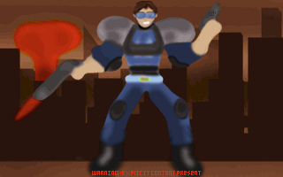

Development History
Origin of Luke Ken
The idea for Luke Ken originated from ZNukem (the creator of Luke Ken) and was initiated in November 2020. One of ZNukem's friends, Starbuckmoko, expressed a desire for a free copy of DN3D. ZNukem, inspired by Freedoom, had the thought, "Why not create a 'free duke' project?" However, it became apparent that using a name too similar to Duke Nukem wouldn't be suitable. As a temporary measure, ZNukem named it "Project Jack," which was a code name previously used for a future game being developed in UE4 kind of uncertain where that would go.
Since Duke Nukem 3D source code was released on April 1st, 2003, by 3D Realms under the GPL-2.0 license, it has opened up ideas for fans to use the engine for projects. Some code from Build Engine remains in the DN3D source tree under buildlic.txt by Ken Silverman. Which can confuse some about how much of it is open source, It is best to read both licenses to understand it more clearly. Doesn't stop anyone from making a free game on it. AMC and A.O.W.L one of the great examples what you can do with the engine. This prompted ZNukem a idea to make a game, he only cares about making a free game that is cool that everyone can enjoy and that is not Duke-related. This where all begins.
Before Luke Ken
Prior to the creation of Luke Ken, ZNukem conducted research and stumbled upon a project called Dave3D. Initiated by leilei in 2008, Dave3D aimed to develop a 'free duke' game and was created by the same person who made Open Arena. Leilei was also the founder of four other FOSS (Free and Open-Source Software) data projects with her group FSFPS. However, due to misunderstandings with 3D Realms, the former owner of the Duke Nukem franchise, Dave3D encountered numerous challenges and was eventually asked to cease development. It is possible that Dave3D borrowed heavily from Duke Nukem, with weapons like the RPG and Pipe Bomb, as well as the HUD, bearing striking similarities in design but it is uncertain. This still left as mystery what and why happened.
Learning from this experience, ZNukem made a conscious decision to avoid replicating what Dave3D had done and instead embarked on a new venture. The goal was to create something original and new game for the DN3D engine while still capturing the nostalgic graphical style reminiscent of the 90s without it being related to Duke. It's all about being creative with ideas, even if open source and source code is available.
The Name Luke Ken
The name "Luke Ken" was actually a result of a mistake in remembering the name of Commander Keen. However, it stuck in ZNukem's mind and seemed like a fitting choice, In faith It did happen incorporating references to Duke Nukem and Ken Silverman (the creator of the Build Engine). It paid homage to the software licenses and resonated with ZNukem, representing a fresh and innovative character within the open-source gaming world.
Development
Development of Luke Ken began on November 26, 2020. Starting with placeholder sprites from the ZDoom forums Site, ZNukem explored different ideas and gradually transitioned to a classic sci-fi concept. Unique assets were developed to provide a fresh and distinctive experience, drawing inspiration from games such as Blake Stone, Duke Nukem 2, and Commander Keen. It was during this phase that the creator began acquiring new skills, learning how to create their own assets using tools like Krita and color palettes. This involved crafting sprites, textures, and even screens specifically for the project, contributing to the overall vision of Luke Ken.
Collaboration and Expansion
Throughout the development process, ZNukem collaborated with highly talented individuals. One notable contributor was THEBarausII, who served as one of the maintainers and made substantial contributions in areas such as textures, switches, and skyboxes. Another noteworthy contributor was RS300, who created the main theme of Luke Ken, known as "Rock City and Roll" or simply RC&R.mid and XDuke making level end screen theme called (Free For All). Many other individuals also joined the project over time to help, offering their valuable input and feedback. The involvement of the community played a crucial role in shaping the evolution and growth of Luke Ken.
The Ideas
ZNukem envisioned Luke Ken as a stylish space enforcer with a distinctive suit, blue visor shades, and cool short brown hair. However, due to limitations in color choice for Luke Ken's enforcer suit, the character had to be blue to accommodate changes for player colors in multiplayer. The original marine group name, "Galactic Forces Division," later changed into the "Galactic Task Force" sound more fitting. Luke Ken's character represents a blend of heroism, humor, strength, and seriousness, symbolizing the open-source community's pursuit of innovation and freedom.
Concept art of Luke Ken enforcer suit on title screen
Going Public
On June 11, 2023, ZNukem took a significant step by releasing all the raw Luke Ken assets to the public on GitHub. This move aimed to make the project accessible for collaboration and further development. The project is currently licensed under BSD, similar to Freedoom.
Picking a license
On Augest 21, 2023, with plans to picking official license for the project. A vote was listed in announcements on Luke Ken discord community as test to see what everyone picked and wanted to be. Since decisions isn't my suit, I did leave the faith of it up to the community what it should be. Old license remained in final vote. Which what it will be currently for now going forward, unless necessary to change it in the near future.